About the project
A premium lunch
in a clear tray.
ChefGourmet is a line of ready-to-eat salads: Greek, Caesar, Mozzarella and Crudités. A deep navy sleeve with gold lettering gives an everyday lunch a premium feel, while the clear tray lets the fresh ingredients speak for themselves.
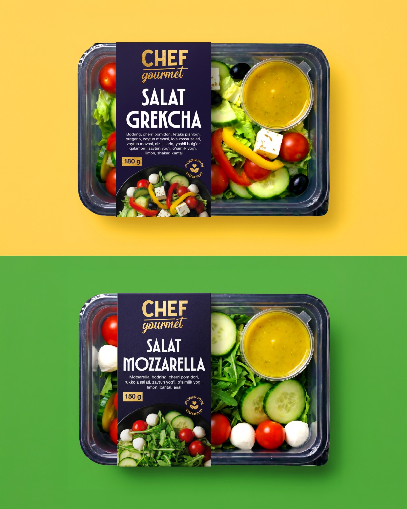
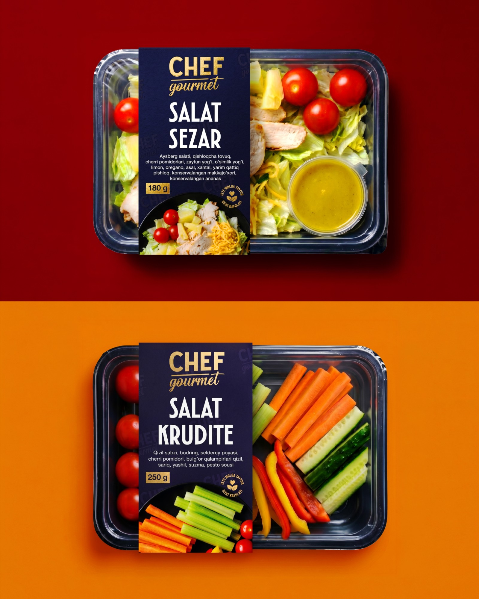
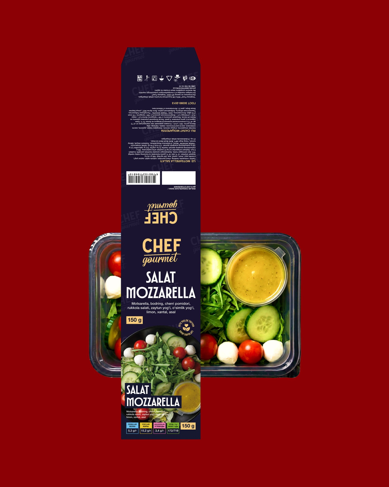
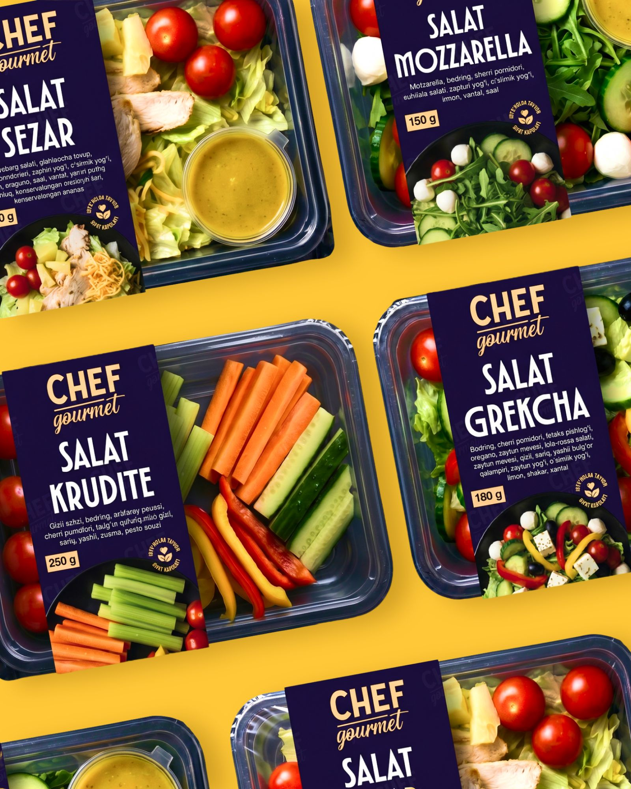
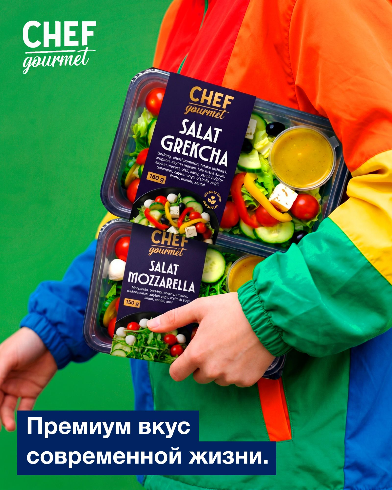
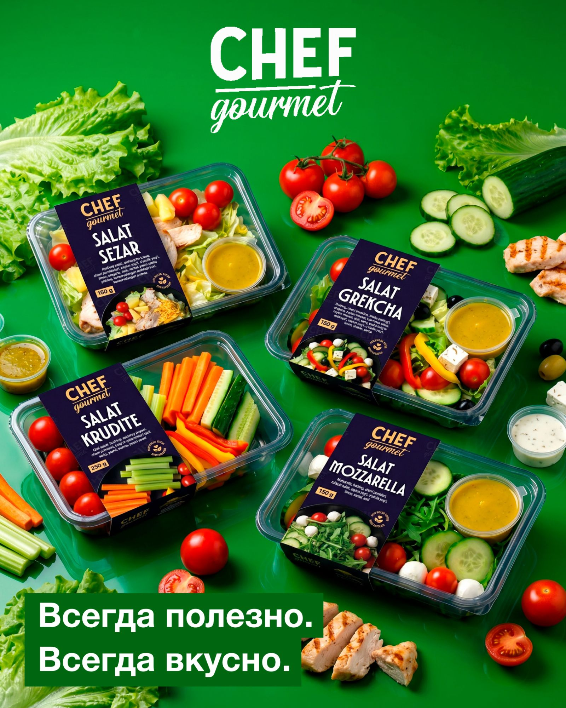
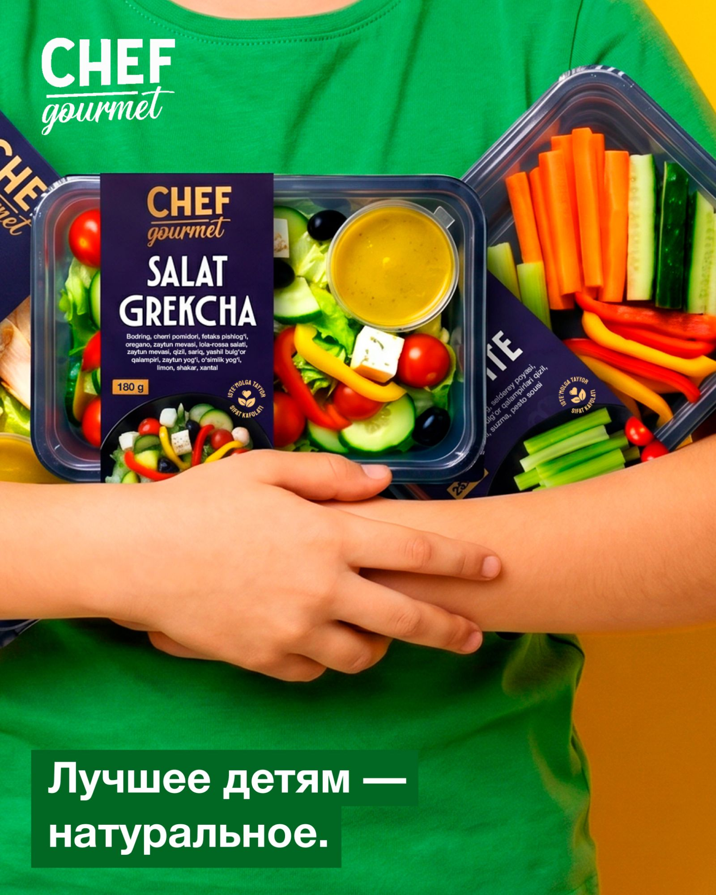
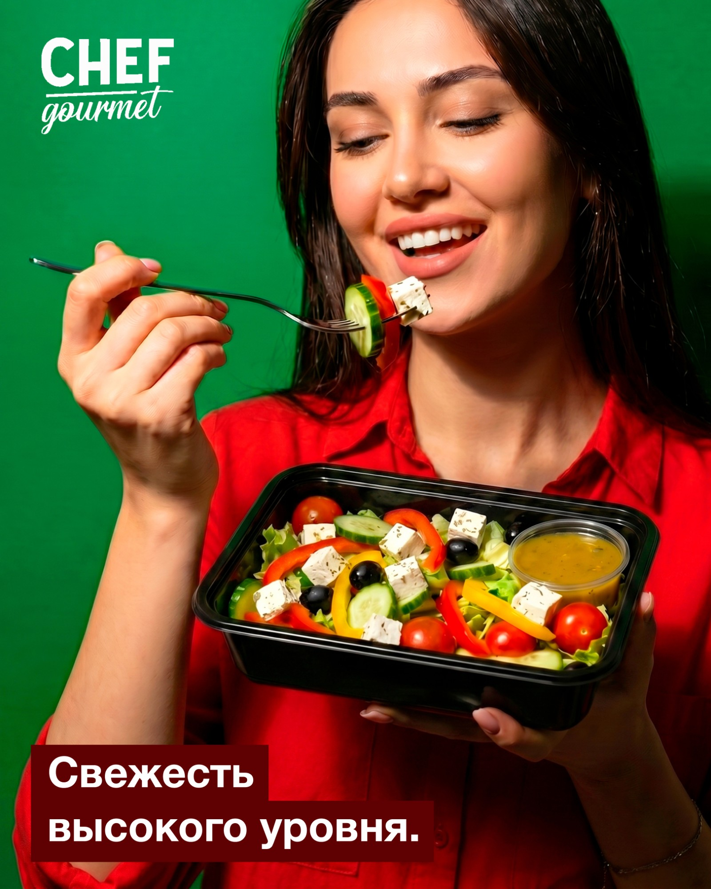
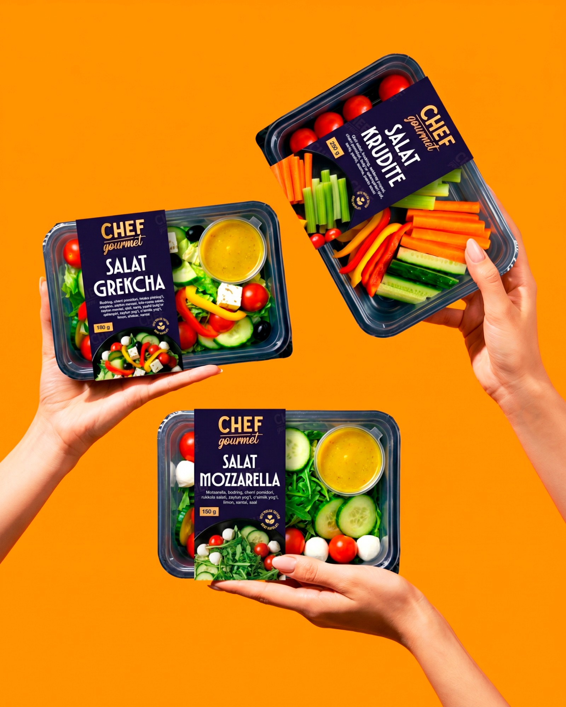
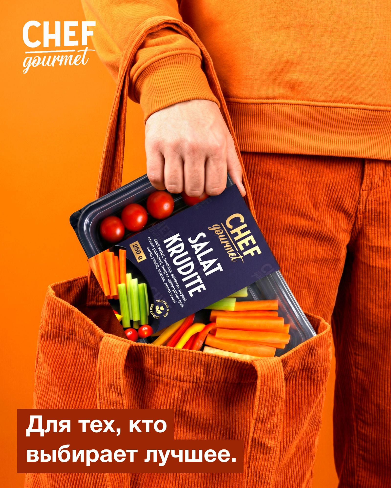
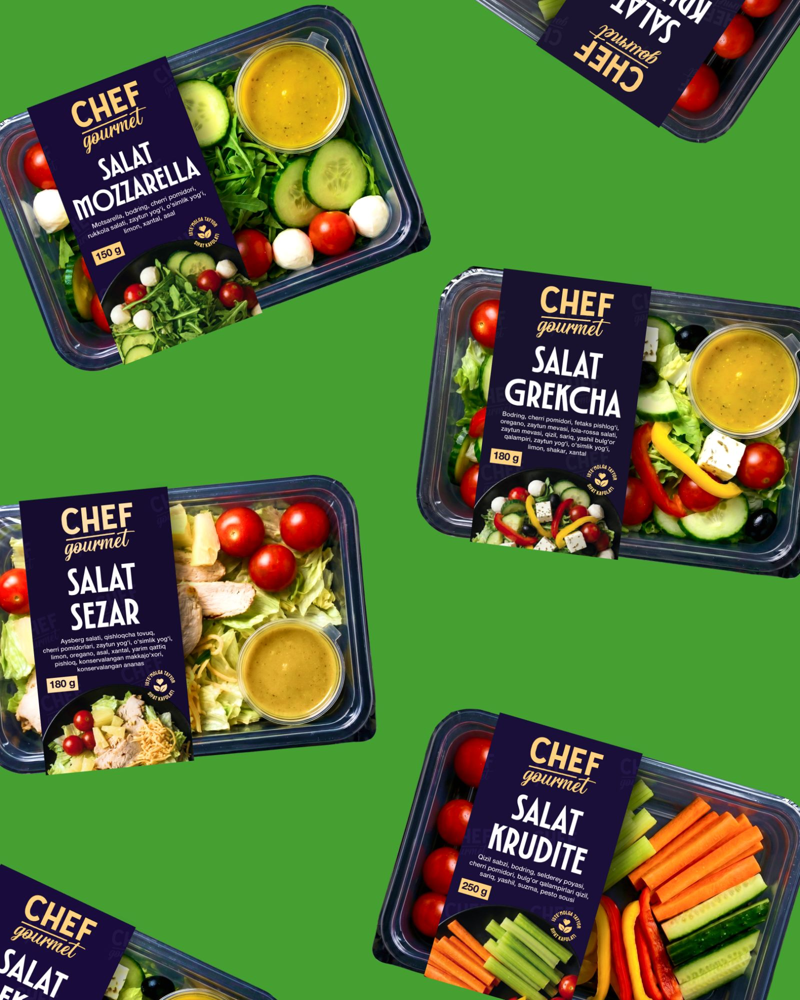